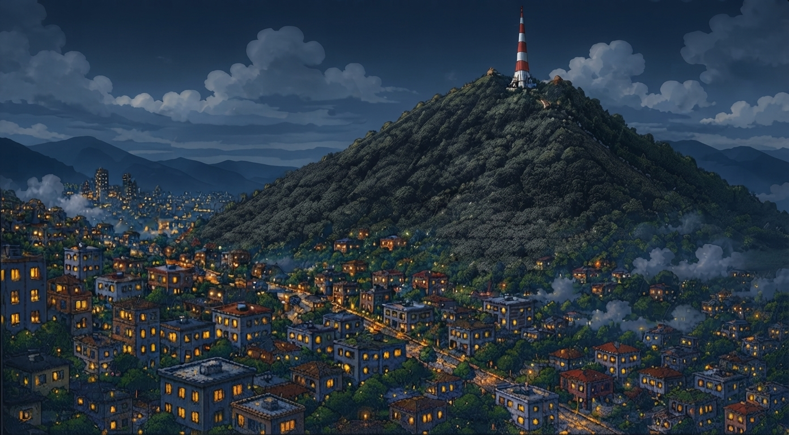
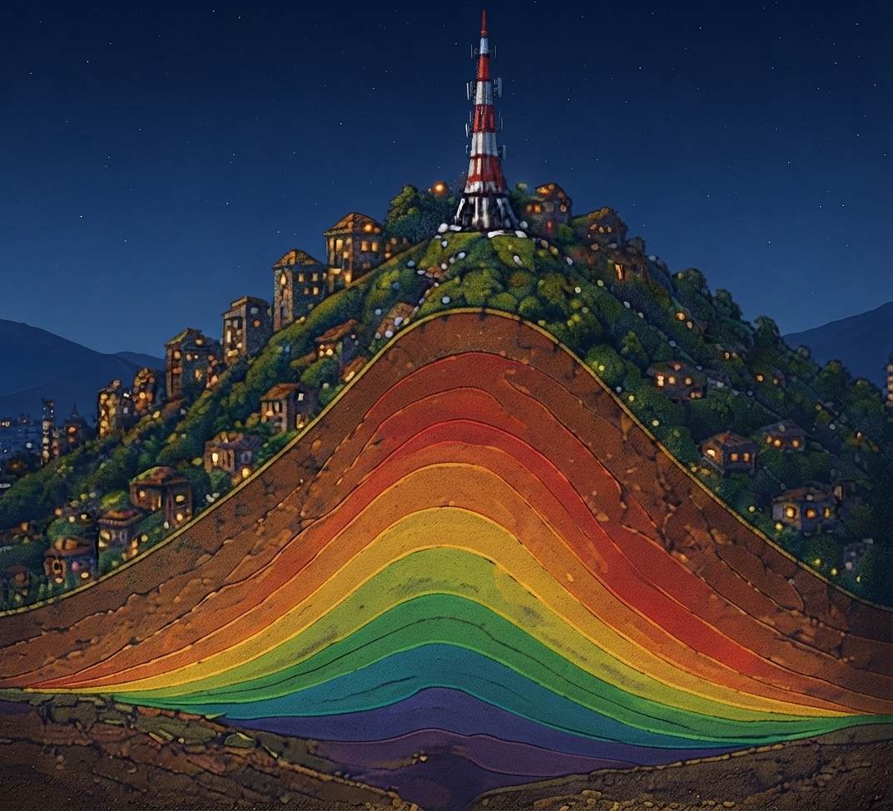
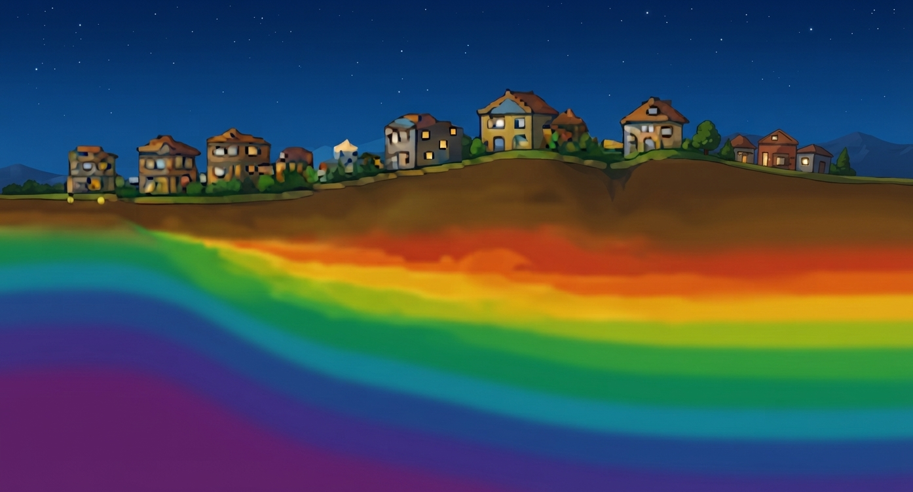
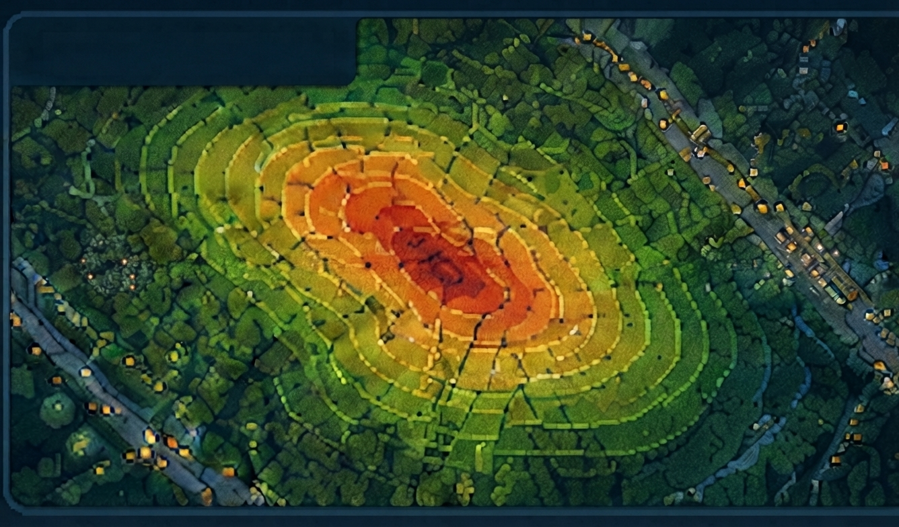

○ NO CONECTADO
Modo manual (sliders)
MATRIZ A (Rigidez del Suelo)
[ 4.2 -1.1 0 -0.5 ]
[-1.1 4.5 -1.2 0 ]
[ 0 -1.2 3.8 -1.0 ]
[ -0.5 0 -1.0 3.6 ]VECTOR b (Cargas: lluvia + inclinación)
[ 0.0 ]
[ 0.0 ]
[ 0.0 ]
[ 0.0 ]

